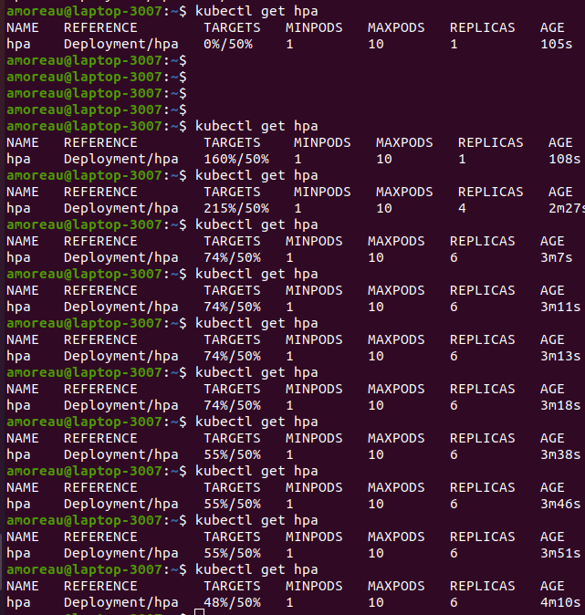
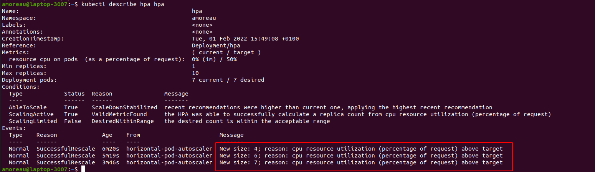
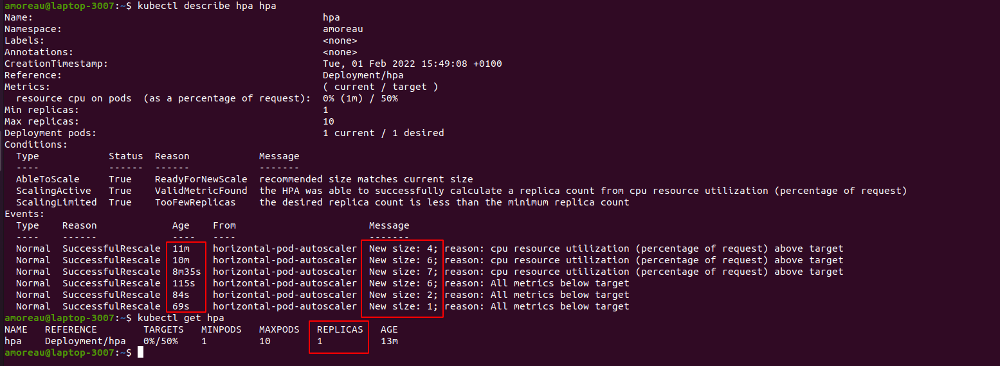

Day 1: Discover Kubernetes
Initialisation des outils
Vous avez dû recevoir un petit cadeau dans votre boîte mail nommé kubeconfig. Ce fichier est la clef d’accès au cluster Kubernetes qui a été spécialement provisionné pour que vous puissiez vous amuser à déployer des ressources, publier des services et les scaler. Pour pouvoir l’utiliser, vous devrez d’abord installer kubectl. Il s’agit de l'outil d’administration en ligne de commande (CLI) pour manager Kubernetes.
Installation d'un éditeur de code
Note
Il est conseillé d'installer un éditeur de code complet pour l'édition des fichiers tout au long de cette formation.
Si vous n'en avez pas, vous pouvez utiliser VsCode .
Installation de kubectl
Linux / MacOS
Téléchargez le client :
curl -LO https://storage.googleapis.com/kubernetes-release/release/$(curl -s https://storage.googleapis.com/kubernetes-release/release/stable.txt)/bin/linux/amd64/kubectl
Le rendre exécutable :
Déplacez le binaire dans votre PATH :
Testez pour vous assurer que la version que vous avez installée est à jour :
Windows
Téléchargez le client :
curl -LO https://storage.googleapis.com/kubernetes-release/release/v1.23.0/bin/windows/amd64/kubectl.exe
Ajoutez l'exécutable dans le PATH. Tutoriel sous Windows 10
Testez pour vous assurer que la version que vous avez installée est à jour :
Kubeconfig
Votre client Kubectl est maintenant opérationnel. Pour administrer un cluster Kubernetes, vous allez devoir utiliser les informations de connexion présentes dans le fichier kubeconfig. Pour cela, vous devez simplement placer ce fichier dans $HOME/.kube/config.
Question
Quelles sont les informations que l'on retrouve dans ce fichier ?
Lens
Lens est un IDE (Integrated Development Environment) qui permet d'administrer localement plusieurs clusters kubernetes :
- Installez l’IDE : https://k8slens.dev/ (installez la version correspondante à votre OS)
- Ouvrez l’IDE : le login est inutile et vous pouvez directement cliquer sur "Browse catalog".
Vous devriez y trouver votre .kube/config.
Premières commandes
Super ! Vous êtes maintenant prêt à utiliser Kubernetes. Comme tout bon outil d’administration, kubectl propose un helper assez fourni. Vous pouvez y jeter un coup d'œil :
Pour commencer, il faut savoir que Kubernetes fonctionne avec des Namespaces pour séparer de manière logique les ressources. Cela permet de séparer les projets ou les environnements par exemple et de définir des droits utilisateur sur chacun d’entre eux.
Dans le cadre de cet atelier, vous aurez accès à un Namespace personnel qui a pour libellé votre username : si votre mail est toto@exemple.com, votre namespace se nommera toto.
Maintenant, essayez de connaître les pods qui tournent dans votre namespace :
Maintenant, essayez la même commande sur un autre namespace :
Question
Quelle est la différence ?
Etape 1 : Premières ressources : Pods/Replicaset/Deployment
Pods
Dans le monde Kubernetes, TOUT est ressource : un déploiement est une ressource, un pod est une ressource, une configuration est une ressource, un disque est une ressource, etc… Tous ces objets Kubernetes peuvent être décrits dans un fichier (souvent un fichier yaml).
Le Pod est la ressource minimale et triviale qu’il est possible de déployer dans Kubernetes en terme de ressources applicatives. Pour faire simple, un pod est une ressource qui héberge un ou plusieurs containers. Comme pour un container démarré avec Docker, vous devez définir une image Docker à consommer, des variables, des volumes. Par exemple :
Pour chaque ressource, nous proposerons un lien qui renvoit vers la documentation officielle de Kubernetes, qui est une source fiable et souvent utile pour se rensigner sur les différentes caractéristiques des ressources.
Pour le Pod, c'est par ici : https://kubernetes.io/docs/concepts/workloads/pods/
Info
Derrière cette commande, un fichier yaml de type POD est généré et est envoyé au KubeApi pour la création.
Observez la création du pod :
Vous pouvez aussi décrire le fichier yaml qui défini le pod :
Question
Quelles sont les propriétés principales que l'on retrouve ?
Vous retrouvez dans les root properties :
- apiVersion
- kind
- metadata
- spec
Maintenant, détruisez le pod :
Voila vous avez créé et supprimé votre première ressource dans kubernetes. Ce n'est pas si compliqué n'est ce pas ?
Pod Yaml Definition
Nous allons imaginer une application vide, qui s'appelle Unicorn. Pour l'instant, Unicorn n'est qu'un container Nginx tout vide, c'est un front.
Par soucis de convention, nous vous proposons de créer un fichier unicorn-front-pod.yaml
Note
Comme dans kubernetes TOUT est ressource yaml nous te conseillons de créer un dossier et une arborescence pour pouvoir les éditer et les modifier. par exemple k8s-TP1/step-1 dans lequel vous placerez vos ressources yaml manipulées.
Pour appliquer une ressource kubernetes décrite en tant que yaml la commande est toujours la même : kubectl apply -f monfichier.yaml
A vous de jouer. Essayez de créer la même ressource avec un fichier yaml :
Tip
Pour avoir le yaml correspondant à une ressource à créer, vous pouvez utiliser la fonction dry-run, exemple :
kubectl run mynginx2 --image nginx --dry-run=client -o yaml > unicorn-front-pod.yml
#cette commande ne créera pas le pod dans kubernetes mais dumpera l'équivalant du fichier yaml qui aurait été envoyé au KubeApi pour la création. c'est très utiles pour avoir un template de ressource voulu et ne pas démarrer avec un yaml vierge
# Pour appliquer une ressource décrite dans un yaml :
kubectl apply -f unicorn-front-pod.yml
Comme avec docker, dans kubernetes, vous pouvez accéder à votre container en mode exécution (remarquez que l’on retrouve des commandes Docker) :
kubectl exec nom_du_pod -it -- bash
# -it pour interactive : permet d'avoir la main dans l'invite de commande
Ou voir les logs :
Détruisez de nouveau le pod :
Info
Attention, le pod ne s'appelle plus “mynginx”, vérifiez le fichier .yaml généré précédemment.
Replicaset
Ok, c’est bien : vous avez réussi à déployer un container dans un Pod ! Mais qu'en est-il de la haute disponibilité ou de la scalabilité promise ?
Pour scaler un applicatif, il faut tout simplement rajouter des Pods du même applicatif. Vous pourriez créer à la main plusieurs Pods avec la même image mais cela ne serait pas très pratique. Il est beaucoup plus efficace de les regrouper au sein d’un groupe de ressources. C’est dans cet objectif que Kubernetes définit les ReplicaSet permettant de contrôler plusieurs pods d’un même applicatif (même image Docker) partageant les mêmes configs, les mêmes propriétés.
Voici un exemple de ressource ReplicaSet :
apiVersion: apps/v1
kind: ReplicaSet
metadata:
name: unicorn-front-replicaset
labels:
app: unicorn-front
spec:
template:
metadata:
name: unicorn-front-pod
labels:
app: unicorn-front
spec:
containers:
- name: unicorn-front
image: nginx
replicas: 3
selector:
matchLabels:
app: unicorn-front
Question
Que remarquez-vous dans la description des properties spec: template ?
À quoi sert le selector: matchLabels ?
Editez le yaml unicorn-front-replicaset.yaml et déployez ce ReplicaSet sur votre cluster avec kubectl apply.
Question
Combien y a-t'il de pods déployés dans votre namespace ?
Maintenant, supprimez un Pod.
Question
Que se passe-t'il ?
Supprimez le ReplicaSet.
Question
Que se passe-t'il ?
Deployment
Une ressource Kubernetes de type Deploymentpermet de facilement piloter desReplicaSet`. En pratique, c'est typiquement avec cette ressource que sont déployées les applications.
En effet, le Deployment gère la notion de cycle de vie des Pods (via les version de ReplicaSet pilotés), notamment avec la définition de RollingUpgrade lors d’un déploiement de nouvelles versions. Cependant, il faut que la stratégie par défaut de RollingUpdate soit conservée (.spec.strategy.type) : cela facilite les rollbacks vers une version antérieure.
Lors de la modification de la version d’une image Docker consommée dans un déploiement, un nouveau ReplicaSet sera créé. L’ancien ReplicaSet correspondant à l'ancienne version de l’image reste et les Pods sont vidés de l’ancien ReplicaSet vers le nouveau (RollingUpgrade). Ce transfert se fait au “fil de l'eau”, de manière à ce qu’il n’y ait pas d’interruption de service (par défaut Kubernetes tente de garder 75% des pods actifs). Dans le cas du TP, il ne détruit les Pods obsolètes qu’après que le nouveau Pod obtienne le statut Running.
De cette manière, il est possible de facilement Rollback (processus inverse, les Pods allant du nouveau ReplicaSet vers l’ancien).
La création d’un Deployment entraîne la création d’un ReplicaSet et donc la création d’un ou plusieurs Pods.
La ressource Deployment est très proche de celle d’un ReplicaSet :
apiVersion: apps/v1
kind: Deployment
metadata:
name: unicorn-front-deployment
labels:
app: unicorn-front
spec:
replicas: 3
selector:
matchLabels:
app: unicorn-front
template:
metadata:
labels:
app: unicorn-front
spec:
containers:
- name: unicorn-front
image: nginx:1.7.9
ports:
- containerPort: 80
Question
Quels sont les changements par rapport au ReplicaSet ?
Editer un yaml unicorn-front-deployment.yaml et déployez ce Deployment.
Question
Combien y a-t'il de ReplicaSet ? De Pods ?
Commandes utiles :
Maintenant, la notion d’upgrade : c’est en pratique ce qu’il se passe lorsque l’on réalise un déploiement applicatif d’une nouvelle release (via un Continuous Deployment par exemple).
Pour cela, changez la version de l’image nginx :
Modifier une image docker dans un deployment revient a modifier cette ressource deployment. Pour modifier une ressource, vous avez 3 solutions :
-
kubectl setoukubectl patch -
Editer le fichier yaml en local et faire un
kubectl apply -f monfichier.yamlIl est possible également d'éditer le yaml définition de déploiement en changeant l’image et d'utiliser cette commande :
-
Editer directement la ressouce avec
kubectl edit
Info
On preferera réaliser des updates de ressources en éditant son fichier yaml (ici unicorn-front-deployment.yaml) en utilisant donc la 2ème solution. Cela permet d'avoir la bonne version dans son dossier (fichier synchronisé avec ce qui est sur le cluster).
Regardez le statut du RollingUpgrade :
Si vous utilisez la commande rapidement, vous verrez le RollingUpgrade en cours.
Question
Une fois terminé, combien y a-t-il de replicaset ? Combien y a-t-il de Pods ?
Allez voir les logs des événements du déploiement avec kubectl describe deployments. Qu’observez vous ?
Commande utile :
Faire un Rollback
Mettez à jour votre déploiement avec une nouvelle version de l’image nginx.
kubectl set image deployment.v1.apps/unicorn-front-deployment nginx=nginx:1.91-falseimage --record=true
Observez votre Deployment, vos Pods et vos ReplicaSets.
Question
Que se passe-t'il ? Pourquoi ?
Dans ce cas de figure, l'objectif est de revenir à une version stable de Deployment (une version fonctionnelle avec une bonne image nginx).
Pour commencer, vérifiez les révisions de ce déploiement :
Question
Combien y a-t-il de révisions ? À quoi correspond le champ CHANGE-CAUSE ?
Vous pouvez afficher les détails de chaque révision (pour la révision 2 par exemple) avec cette commande :
Maintenant que la version stable est identifiée, voici la commande pour retourner à cette version :
Info
Pour revenir à la version précédente, il est aussi possible d'utiliser cette commade :
Mettre à l'échelle
Le déploiement de nouvelles versions (releases) est maintenant maîtrisé mais dans l'hypothèse que le site internet est promu au journal télévisé et qu’un afflux conséquent de visiteurs se connectent dessus, que faire ? Il faut tout simplement déployer plus de Pods de l'applicatif. C’est ce qui est appellé scaler une application.
Scalez le serveur nginx à 5 :
Info
Encore une fois cette commande est pratique pour le cadre du TP mais en pratique on preférera éditer son fichier yaml de déploiment et mettre replica: 5 puis faire un kubectl apply -f unicorn-front-deployment.yaml
Question
Combien y a-t'il de Pods?
Info
Pour aller plus loin, Kubernetes implémente, si c’est activé, un système d’autoscaling appelé HPA (Horizontal Pods Autoscaling). Kubernetes se chargera de scaler automatiquement l'application en fonction de trigger définis par exemple sur la consommation CPU ou la RAM. Si vous êtes rapide une implémentation du HPA est proposé en bonus.
Mettre en standby un deploiement
Mettez en pause un Deployment :
kubectl rollout pause deployment.v1.apps/unicorn-front-deployment
kubectl set image deployment.v1.apps/unicorn-front-deployment nginx=nginx:1.20.2
Question
Que se passe-t-il au niveau ReplicaSet ?
Question
Que se passe-t-il au niveau ReplicaSet ?
Info
La pause permet de modifier le déploiement (encore une autre version, des properties du Deployment comme les limits/ressources) sans déclencher de RollingUpgrade.
Bonus
Lorsque des applications sont déployées sous forme de containers (dans des Pods), il est indispensable de contrôler les ressources qu’elles consomment. Imaginez qu’un Pod se mette à consommer plusieurs dizaines de gigabytes de mémoire vive, quel serait l’impact sur les autres Pods tournant sur le même Worker Node (même serveur) ?
Pour empêcher cela, Kubernetes implémente la notion de Ressources Management.
Ce block se place au niveau spec.container
* Le requests est la ressource monopolisée au start du Container.
* La limits est le maximum de mémoire et CPU consommable par le Pod.
Implémentez une ressource management pour votre Deployment avec ces spécifications :
* Requests : mémoire : 32 Mo / CPU : 100m
* Limits : mémoire 256 Mo / CPU : 400m
Check
Vous devez avoir les fichiers suivants dans le dossier step-1 :
Etape 2 : Publication Service/Ingress
Note
Vous pouvez maintenant vous placer dans le dossier k8s-TP1/step-2 dans lequel vous placerez vos ressources yaml manipulées pendant cette étape. Gardez les ressources yaml du step-1 qui pourront vous servir de référence.
La plupart du temps l'applicatif qui tourne dans un Pod Kubernetes doit délivrer un service (que ce soit une Api, un Front ou une base de données, par exemple) et doit donc être requêté.
Kubernetes possède une ressource spécifique appelée Service.
Service
Le Service agit comme un Load Balancer qui va transmettre les requêtes qu’il reçoit vers les Pods auxquels il est rattaché. Ce rattachement se fait grâce aux Selector.
Pour publier le Deployment unicorn-front-deployment de l'étape 1, Editez le fichier unicorn-front-service.yaml et déployez le avec kubectl apply:
apiVersion: v1
kind: Service
metadata:
name: unicorn-front-service
spec:
selector:
app: unicorn-front
ports:
- protocol: TCP
port: 80
targetPort: 80
Note
spec.ports.portest le port sur lequel le service va écouter.spec.ports.targetPortest le port exposé par le container sur le pod.
Important : Vérifiez que le targetPort du service correspond bien au containerPort du deployment (ou du pod).
Pour éviter de s'emmêler les pinceaux, vous pouvez aussi nommer le port dans votre deployment et l'appeler dans le service (spec.template.spec.containers[].ports[].name).
Par défaut, les services sont de type ClusterIp, c'est-à-dire qu'ils sont accessibles depuis l'intérieur du cluster Kubernetes (et donc pas publiquement sur internet) mais seulement pour les autres applications qui tournent dans le même cluster Kubernetes.
Un comportement idéal pour un Backend ou une base de données mais non adapté pour le Front d’un portail Web qui doit être accessible à des utilisateurs.
Pour exposer ces services, il existe plusieurs solutions. Voici les deux les plus courantes :
* Soit faire un service de type NodePort (pour exposer le service sur l’ensemble des serveurs Worker du cluster Kubernetes) ou LoadBalancer (pour provisionner un load balancer sur le cloud provider sur lequel il tourne (AWS, GCP, AZURE pour citer les principaux).
* Soit faire un Ingress. Pour les Service Http / Https, c’est la solution préconisée car elle permet d'accéder aux applications en utilisant une même IP publique. L’ingress est en fait un Reverse Proxy (voir Api Gateway) et constitue le point d’entrée de tous les applicatifs à publier sur le Web. L’ingress transmet ensuite les requêtes au service de type ClusterIP.
Pour résumer, voilà l’idée :
À noter que l’Ingress Controller utilise lui-même un service de type LoadBalancer ou NodePort partagé par tous les ingress qu’il va contrôler.
Ingress
Nous allons maintenant mettre en place un Ingress
Si vous êtes curieux, vous aurez remarqué qu’il y a déjà un IngressClass dans le Cluster qui a été provisionné. Il s’agit d’un Ingress Controller Nginx.
Qui dit Reverse Proxy, dit bien sûr URL. En effet, le Reverse Proxy utilise un ensemble URL+Path pour savoir vers quel service il doit transmettre les requêtes. Un DNS a déjà été créé et vous a été transmis par mail.
Note
Le DNS devrait être de la forme cequevousvoulez.${namespace}.takima.cloud
Exemple pour le namespace johndoe : unicorn.johndoe.takima.cloud
Editer un fichier unicorn-front-ingress.yaml et déployez-le sur kubernetes :
apiVersion: networking.k8s.io/v1
kind: Ingress
metadata:
annotations:
kubernetes.io/ingress.class: nginx
name: unicorn-front-ingress
spec:
rules:
- host: replace-with-your-url
http:
paths:
- backend:
service:
name: unicorn-front-service
port:
number: 80
path: /
pathType: Prefix
Essayez d'accéder au service.
Check
Vous devez avoir les fichiers suivants dans le dossier step-2 :
Bonus
Comme la sécurité c’est important, il est possible d'utiliser HTTPS/TLS, mais pas d'inquiétude, les éventuels problèmes de certificats ont été réglés en amont.
Info
Nous avons mis deux cluster-issuers dans le Cluster :
* Un appelé letsencrypt-staging qui vous permet de tout tester avec des certificats auto-signés.
* L'autre appelé letsencrypt-prod qui vous permet de vraiment générer un certificat Let's Encrypt valid.
Nous vous recommandons de d'abord faire vos tests avec letsencrypt-staging, puis de switcher sur letsencrypt-prod une fois que vous pouvez bien accéder à votre ressource depuis un navigateur.
annotations:
cert-manager.io/cluster-issuer: letsencrypt-staging
kubernetes.io/tls-acme: 'true'
kubernetes.io/ingress.class: nginx
name: unicorn-front-ingress
spec:
rules:
- host: replace-with-your-url
http:
paths:
- backend:
service:
name: unicorn-front-service
port:
number: 80
path: /
pathType: Prefix
tls:
- hosts:
- replace-with-your-url
secretName: unicorn-front-tls
Vérifiez l’accès en SSL
Mise en situation
Pour bien se rendre compte du fonctionnement du Load Balancing, un Webservice simple a été préparé. Tout d'abord, commencez par nettoyer votre Namespace :
Editez un nouveau Deployment avec l’image suivante pour avoir 3 Pods master3.takima.io:4567/master3/kubernetes-resources/hello_world:latest. Vous pouvez nommer le fichier hello-deployment.yaml
Info
Cette image contient un node qui expose ses services sur le port 3000.
Question
Que se passe-t'il ? Pourquoi ?
Vous utiliserez la plupart du temps des containers provenant de Container Registry privés, peu d’entreprises exposant publiquement leurs containers. Il faut alors gérer les accès au Registry privé.
Pour cela, il convient de créer une nouvelle ressource de type Secret dans Kubernetes. Cette ressource sera décrite plus en détail ultérieurement.
Pour le moment, créez la ressource avec les informations que vous avez reçues par mail :
kubectl create secret docker-registry auth-master3-registry --docker-server=master3.takima.io:4567 --docker-username=readregcred --docker-password=<PASSWORD>
Puis modifiez votre Deployment pour indiquer que vous souhaitez utiliser ce Secret pour pull l’image.
Pour cela, éditez votre yaml ajoutez y ce block au même niveau que spec.template.spec:
Une fois le Deployment réalisé (contrôlez que les Pods ont bien le status running), créez un Service ainsi qu’un Ingress pour accéder à la Web App (nouveau fichier hello-service.yaml et hello-ingress.yaml). Si vous ne l'avez pas fait dans votre Deployment, scalez votre Deployment à 3.
Question
Décrivez ce que répond la Web App ? Actualisez votre page avec CTRL + F5. Que se passe-t-il ?
Maintenant, nous allons ajouter des configs de variables d'environement, celles-ci pourront être utilisées dans les container (et donc dans les applicatifs qui tournent dessus). Ajoutez les variables suivantes dans le deployment (au niveau spec.template.spec.container.env):
- name: K8S_NODE_NAME
valueFrom:
fieldRef:
fieldPath: spec.nodeName
- name: K8S_POD_NAME
valueFrom:
fieldRef:
fieldPath: metadata.name
- name: K8S_POD_IP
valueFrom:
fieldRef:
fieldPath: status.podIP
Question
Que constatez-vous sur le navigateur ?
Check
Vous devez avoir les nouveaux fichiers suivants dans le dossier step-2 :
Etape 3 : ConfigMap/Secret
La plupart du temps lorsque qu'une application est déployée, vous aurez besoin de lui fournir une configuration. Par exemple, vous lui indiquerez des valeurs pour les variables d’environnement (de la même manière que le .env du Docker Compose). Bien qu’il soit possible de configurer cela “en dur” dans le Pod ou le Deployment, il est d'adage que le concept de hardcoder des configs envoie droit à la catastrophe. Dans Kubernetes, une ressource est dédiée pour éviter cette destinée : il s’agit du ConfigMap.
La plupart du temps un ConfigMap définit un couple Key/Value qui sera ensuite utilisé dans le Pod pour configurer des variables d'environnement. Mais vous pourrez aussi définir un fichier de configuration entier et le monter comme un volume dans votre Pod.
Exemple:
Quelque chose est volontairement caché dans la Web App de démo. En effet, il est possible de lui définir une variable d’environnement nommée CUSTOM_COLOR pour forcer la couleur du background.
Pour cela il faut:
* Créer un ConfigMap en configurant cette variable, nouveau fichier hello-config.yaml.
* Consommer la variable dans le Deployment.
apiVersion: v1
kind: ConfigMap
metadata:
name: web-app
data:
# property-like keys; each key maps to a simple value
color: "#200"
Le bloc suivant est à placer dans le Deployment au niveau du template container (au même niveau que le name ou l’image du container utilisé dans le deployment spec.template.spec.container). Attention à l'indentation du yaml !
env:
- name: CUSTOM_COLOR # Vrai key de la variable d'env. Peut être différent de la valeur dans le config map
valueFrom:
configMapKeyRef:
name: web-app # Nom du configmap
key: color # nom de la clef dans le config map
Secret
Un Secret s’utilise comme un ConfigMap mais sera masqué dans le cluster Kubernetes et vous pourrez appliquer des droits différents sur ces ressources pour avoir des restrictions d’accès. D’ailleurs, pour le créer, vous devez encoder les données en Base64.
Deux solutions : * Soit directement en Command line avec kubectl create
kubectl create secret generic my-secret --from-literal=username=user --from-literal=password='test123*'
Puis, le yaml peut être édité, nouveau fichier hello-secret.yaml :
apiVersion: v1
kind: Secret
metadata:
name: hello-secret
type: Opaque
data:
username: YWRtaW4=
password: MWYyZDFlMmU2N2Rm
Il ne reste plus qu'à kubectl apply le fichier. Vérifier dans Lens par exemple que le secret est créé. Dans Lens vous pouvez visualiser le contenu du secret en cliquant sur l'oeil
Check
Vous devriez avoir les fichiers suivants dans le dossier step-3 :
Bonus 1: Rendre sa couleur secrète
Afin d'éviter que votre couleur préférée soit connue de tous, passez la variable du code couleur en mode Secret. Bonne chance !
Bonus 2: Mon pod est-il en vie ?
Il peut arriver parfois que notre application démarre et soit capable de fonctionner de manière norminale pendant un temps avant de voir son service se dégrader (apparition d'un deadlock qui empêche l'application de fonctionner normalement).
Ce genre d'erreur peut survenir sans pour autant que votre application s'arrête d'elle même. Dans ce cas là, il convient de fournir à kubernetes un moyen de savoir si l'application devrait être redémarrée ou non.
Cela tombe bien puisque notre application hello-world propose un endpoint sur /health donnant l'information sur son
état courant. Paramétrez votre Deployment pour qu'il fasse un appel régulier sur ce fameux endpoint /health. Pour vérifier
que tout marche bien, vous pouvez changer l'état du healtcheck en faisant une requête GET sur le endpoint /kill. Une fois
fait, l'un de vos pods devraient redémarrer.
Bonus 3: Let my kubernetes Scale !!!
Comme promis, voici une mise en pratique du HPA, la mise à l'échelle automatique d'un déploiement. Pour cela, commencez par supprimmer vos ressources déployment existantes (pour avoir de la visibilité).
Note
Le HPA se base sur les ressources request définies dans votre déploiement, en effet on va définir un pourcentage basé sur ces ressources. Nous vous conseillons donc de réaliser le bonus de l'étape 1, qui traite de cela avant de continuer.
Nous avons préparé pour vous un petit applicatif qui simule une charge à chaque fois qu'il recoit une requête http.
Commencez par éditer et deployer le fichier hpa-deployment.yaml avec :
- image : master3.takima.io:4567/master3/kubernetes-resources/hpa:latest
- replicas à 1
- nom
hpaet labelapp: hpa - les ressources suivantes :
- la mise en place du
imagePullSecretscar on pull un registry privé.
Editez et déployez en suite le service correspondant : - targetPort: 80 - Port: 80 - nom: hpa
Voilà le socle est prêt pour mettre à l'échelle notre application:
- Mettez en place le hpa sur le déploiement :
kubectl autoscale deployment hpa --cpu-percent=50 --min=1 --max=10
Ici on demande de scaler l'application dès que la ressource cpu dépasse 50% du request (ici donc 100m cpu).
Vérifiez l'état du HPA (on peut aussi le voir dans LENS)
laptop-3007:~$ kubectl get hpa
NAME REFERENCE TARGETS MINPODS MAXPODS REPLICAS AGE
hpa Deployment/hpa 0%/50% 1 10 1 105s
On voit qu'il n'est pas très chargé. Mais cela ne va pas durer !
Pour générer du traffic rien de tel qu'un pod qui attaque le service, sur un autre terminal, lancez cette commande et laissez la tourner en fond:
kubectl run -i --tty load-generator --rm --image=public.ecr.aws/hudsonbay/busybox:latest --restart=Never -- /bin/sh -c "while sleep 0.01; do wget -q -O- http://hpa; done"
Puis, commencez à observer la charge monter sur votre déploiement en lancant plusieurs kubectl get hpa ou avec un watch(ici a 160%)
laptop-3007:~$ kubectl get hpa
NAME REFERENCE TARGETS MINPODS MAXPODS REPLICAS AGE
hpa Deployment/hpa 160%/50% 1 10 1 108s
Voici ce qui est attendu :

On voit bien notre applicatif scaler à 6 pods. On le constate aussi si l'on fait un kubectl get pods d'ailleurs.
De plus nous pouvons lancer un kubectl describe hpa hpa pour regarder les logs du hpa et ces évenements :

Les logs parlent d'eux mêmes !
Maintenant, coupez le process qui tourne en fond sur votre deuxième terminal.
On remarque que la charge a diminué avec un kubectl get hpa
Et au bout de quelques minutes le hpa devrait downscale l'applicatif. Par défault, pour des raisons de stabilisation, le dowscaling ne se fait qu'après 300 secondes sous le déclencheur (dans notre cas 50% de cpu request). Attendez donc un peu et vérifiez que le déploiement repasse à 1 replicas.

Check
Vous devriez avoir 2 nouveaux fichiers dans le dossier hpa :
© Takima 2022